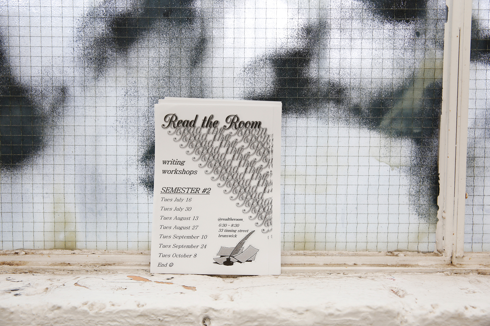
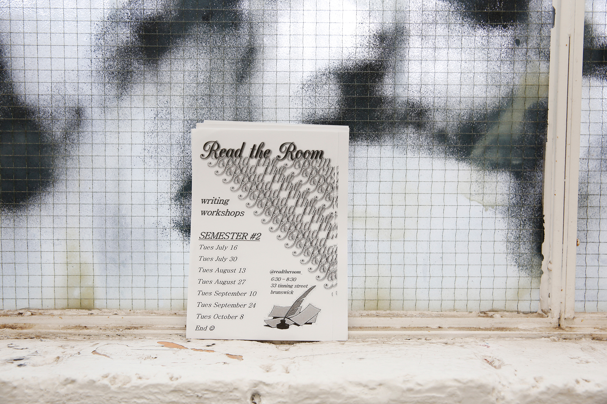

Read the Room is co-directed by Carmen-Sibha Keiso & Kat Capel
Instagram: @readtheroom_
Email: readtheroom.info@gmail.com
ReadtheRoom is an expanded literary practice space that encourages experimental writing, both on and off the page. RTR functions as a liaising hub for various practitioners interested in pursuing the literary form. The space hosts ongoing writing workshops, lecture, exhibitions and reading events. Read the Room is dedicated to both challenging and fostering a community of expanded-literary-practice in Melbourne.
KCCK
 
